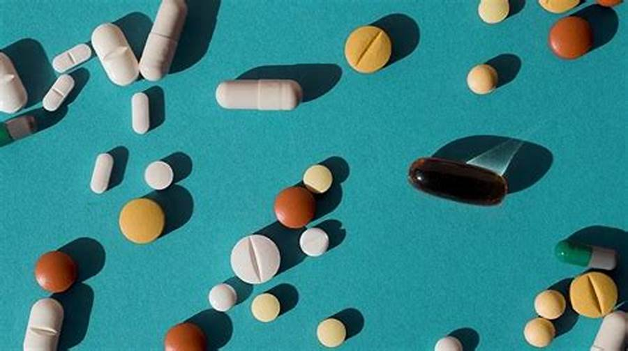
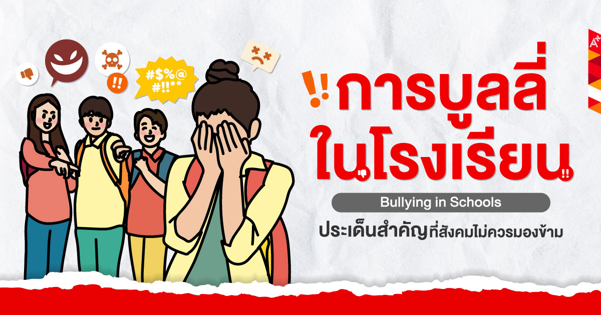

สารเสพติด หรือ ยาเสพติด หมายถึง ยา สารเคมี หรือวัตถุชนิดใด ๆ ที่เมื่อเสพเข้าสู่ร่างกายแล้วไม่ว่าจะโดยรับประทาน ดม สูบ ฉีด หรือวิธีใดก็ตาม ทำให้เกิดผลต่อร่างกายและจิตใจ
การล่วงละเมิดทางเพศ (Sexual Harassment) เป็นสิ่งที่ไม่ควรเกิดขึ้นไม่ว่าจะกับใครหรือเพศไหนก็ตาม โดยเฉพาะกับ “เด็ก” ที่ยังไม่สามารถปกป้องตนเองได้ การล่วงละเมิดเด็ก ไม่ได้เกิดขึ้นจากบุคคลแปลกหน้าภายนอกเท่านั้น แต่กระทั่งคนรู้จักใกล้ชิด เพื่อนบ้าน ครู ญาติพี่น้อง หรือแม้แต่คนในครอบครัวเอง ก็อาจเป็นผู้กระทำได้เช่นกัน
บูลลี่ (Bully) คือ การกลั่นแกล้งที่แสดงออกด้วยคำพูด หรือ พฤติกรรมที่ก้าวร้าวต่อผู้อื่น ซึ่งมักเกิดขึ้นในสังคมที่มีช่องว่างระหว่างผู้ที่มีพละกำลัง หรืออำนาจมากกว่าแสดงออกแก่ผู้ที่อ่อนแอกว่า และมีโอกาสเกิดขึ้นซ้ำๆ โดยพบการบูลลี่ในโรงเรียน และในที่ทำงานมาก นำไปสู่ปัญหาสภาพทางจิตใจ ที่ร้ายแรงได้ในอนาคต
|  |  |